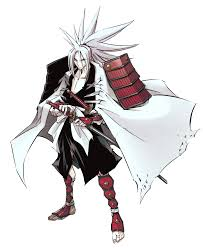

Амидамару (яп. 阿弥陀丸 Амидамару?) — дух-хранитель Йо Асакуры. Надёжен и предан. Обожает клубничное мороженое. Родился — 6 января 1385 года (знак зодиака — Козерог). Умер в 24 года. Национальность — японец.
По сюжету Амидамару рано потерял родителей и тренировался чтобы стать самураем, при этом ломая мечи один за одним. Тогда кузнец Москэ был вынужден переплавить клинок своего отца и выковать новый меч, который Амидамару назвал Харусамэ. Следующей работой Мосукэ стал меч для Императора. Довольный изделием, тот, приказал Амидамару убить Мосукэ, чтобы он не смог выковать что-либо прочнее. Однако Амидамару отказался, за что и поплатился вместе с Мосукэ.